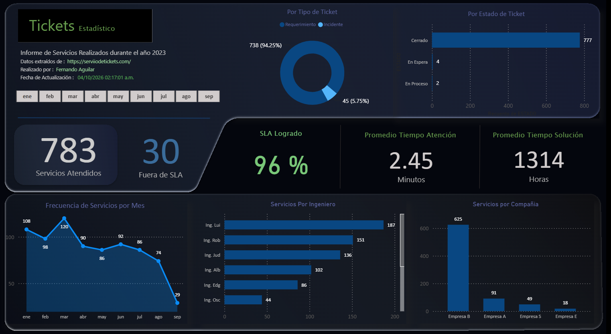
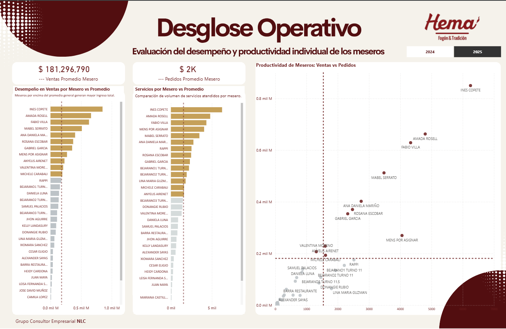
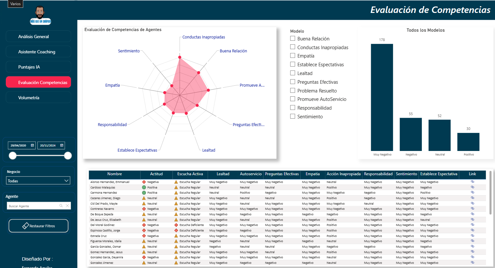

01
▦
Business Intelligence
Dashboards, indicadores, análisis operativo y modelos de información orientados a decisión.
- Power BI
- Power Query
- SQL / Oracle / MySQL
- KPIs & reporting
Diseño soluciones empresariales con Power BI, Power Automate, Power Apps, Python e Inteligencia Artificial para reducir trabajo manual, mejorar la visibilidad operativa y acelerar la toma de decisiones.
Correo · API · SQL · SharePoint
Clasifica · valida · decide · ejecuta
Ticket · alerta · dashboard · respuesta
Combino datos, automatización, aplicaciones e inteligencia artificial según el problema que haya que resolver.
Dashboards, indicadores, análisis operativo y modelos de información orientados a decisión.
Procesos que eliminan tareas repetitivas y conectan sistemas, personas y reglas de negocio.
Herramientas internas y soluciones web enfocadas en digitalizar procesos operativos.
Soluciones de inteligencia artificial conectadas a documentos, procesos y conocimiento empresarial.
Tres ejemplos de cómo convierto datos en información útil para negocio y operación.

Panel integral para analizar el flujo de tickets de soporte, empresas, ingenieros y acuerdos de nivel de servicio. Permite explorar la operación desde distintas dimensiones y detectar oportunidades para mejorar eficiencia y atención al cliente.
Ver dashboard en vivo ↗
Análisis individual de desempeño y productividad para identificar concentración, variación y oportunidades operativas.
Ver dashboard en vivo ↗
Evaluación de competencias, sentimiento y comportamiento para convertir información de interacción en indicadores accionables.
Ver dashboard en vivo ↗Clasificación de solicitudes desde correo para identificar empresa, tecnología, categoría y tipo de caso antes de generar el ticket.
Consulta de manuales, procedimientos y archivos mediante lenguaje natural, embeddings y modelos ejecutados localmente.
Profesional de Tecnologías de la Información con más de 20 años de experiencia en soporte, operación, análisis de datos y mejora de servicios.
Durante los últimos años he trabajado especialmente con Business Intelligence, automatización e integración de información. Hoy estoy llevando esa experiencia hacia soluciones con Inteligencia Artificial aplicada a procesos empresariales.
Contenido práctico sobre Power BI, automatización, análisis de datos e inteligencia artificial.
Cuéntame qué quieres mejorar. Con esa información puedo entender mejor tu necesidad antes de nuestra primera conversación.